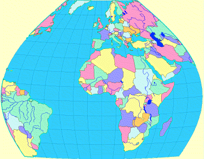

|
MapLink Pro Studio 11.1
|
|
MapLink Pro Studio 11.1
|
Geodetic clipping allows the user to clip data using a shape defined by lines of latitude and longitude upon the earth's surface. By contrast, output clipping clips against a rectangle in the defined output coordinate system, and in general will not clip against lines of latitude and longitude.
In geodetic clipping, the extent in latitude is defined normally using minimum and maximum values, but the extent in longitude is defined in terms of a reference meridian and extents West and East of the reference meridian. This removes any potential ambiguity in whole world datasets. The reference meridian is always included in the clipped extent.
 To define the clip boundaries for geodetic clipping
To define the clip boundaries for geodetic clipping
The example below shows the result of applying geodetic clipping to data in the Bonne projection (standard parallel 5°, longitude 0°), using the following values:
Note that in this case, as for many projections, the lines of latitude and longitude are not straight lines in the output coordinate system. Special handling is required for any polygons that straddle the clip boundaries, since it would be invalid to join the polygon/boundary intersections with straight lines. MapLink therefore introduces additional points along the clip lines between the intersection points, to ensure that the clipped polygon edges correctly follow curved lines of latitude and longitude.
